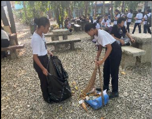
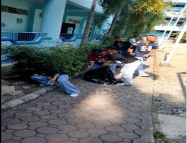
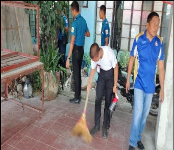

| Education and Research Programs in Supporting the Sustainable Development Goals of UCU | |
|---|---|
|
 |
 |
|
 |
|
Urdaneta City University demonstrates a strong institutional commitment to the United Nations Sustainable Development Goals (SDGs) through its education and research programs. The university integrates sustainability principles across its academic curricula, research initiatives, extension activities, and community engagement programs, ensuring that teaching and scholarly work contribute meaningfully to sustainable development outcomes.
Through interdisciplinary instruction and applied research, the university actively addresses key global challenges such as quality education, good health and well-being, climate action, sustainable cities and communities, responsible consumption and production, and reduced inequalities. Faculty-led and student research projects further support evidence-based solutions to local and regional development issues, particularly in the areas of public health, disaster risk reduction, environmental management, education, and community development.
Based on an assessment of academic programs and research initiatives, Urdaneta City University’s Education and Research (ED) programs directly support 10 out of the 17 United Nations Sustainable Development Goals (SDGs). These include, but are not limited to:
This demonstrates that the university’s academic and research agenda is strongly aligned with global sustainability priorities, reflecting its role as an active contributor to knowledge generation, capacity building, and community-based solutions for sustainable development.